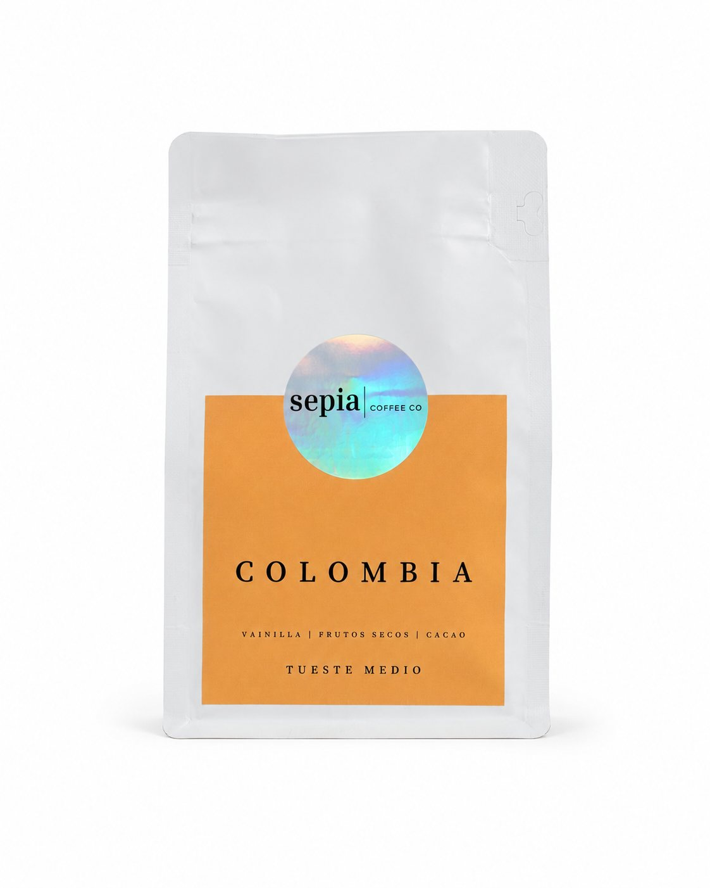
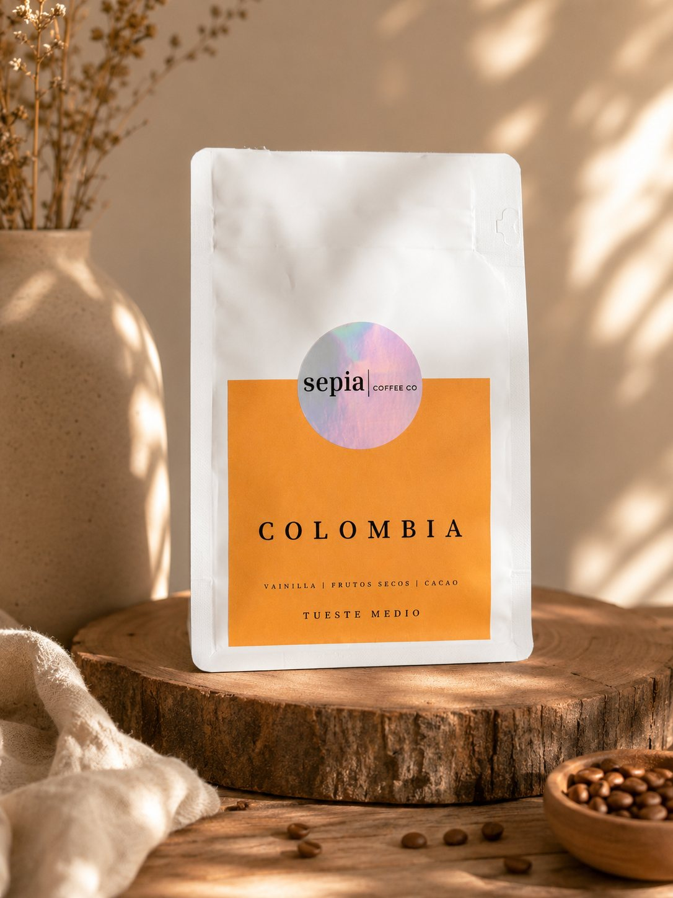
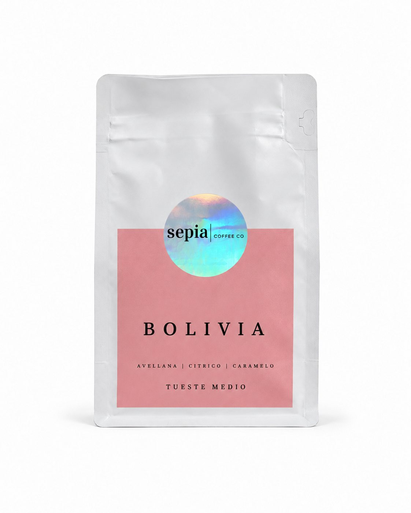
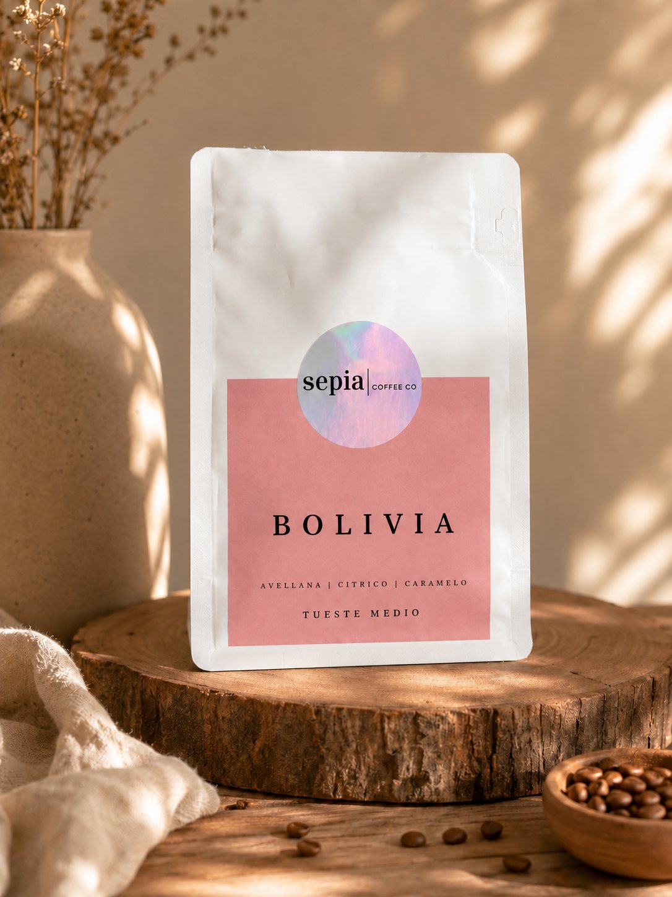
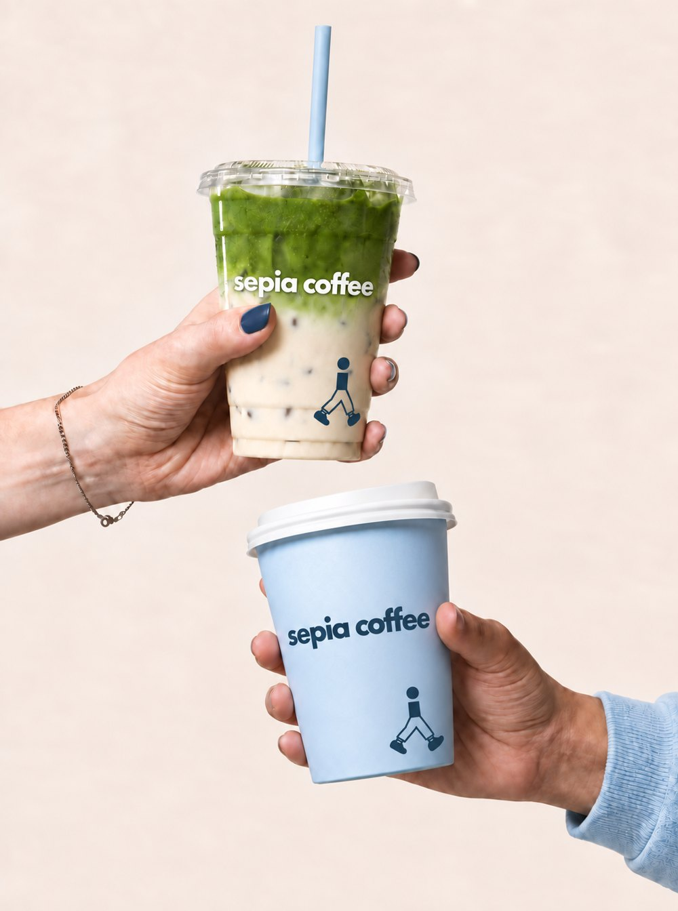

Café y matcha


Más vendidoFormato
Molienda
Colombia
Vainilla, frutos secos y cacao
Precio por confirmar


NuevoFormato
Molienda
Bolivia
Avellana, cítrico y caramelo
Precio por confirmar


Formato
Matcha
En lata o en sobre de recarga
Precio por confirmar

 Edición limitada
Edición limitada
Lata edición limitada
200 g · mientras dure
Precio por confirmar
Para todos los gustos
Ver todo
Kits y accesorios
Para preparar en casa y para llevar.


Kit matcha
Todo para partir
Precio por confirmar


Kit cafetero
Todo para partir
Precio por confirmar


Musette
Bolso de hombro
Precio por confirmar


Polera
Algodón, con el caminante
Precio por confirmar


Vaso
Reutilizable
Precio por confirmar
Cotiza tu evento
Son dos mesas distintas y tienen precios distintos. Elige la tuya y mira cómo cambia el valor.
Tu evento
- Mesa
- —
- Qué se sirve
- —
- Equipo
- —
- Servicio
- —
- Descuento bajo 80 personas
- —
- Viático
- —
Total estimado
—
Pedir la cotización
Valores del catálogo, con IVA incluido y sin copas. La cotización firme va por escrito.
Lo que dicen en Google
¿En qué formato lo llevas?
Lata, recarga o el kit completo.
Para empezar
Lata de 30 g
El formato de entrada, y el que se ve bien en la repisa. Rinde unas quince tazas, que es lo justo para saber si el matcha es lo tuyo.
Ver el matcha Para recargarSobre de 80 g
La recarga. Sale más conveniente por gramo y genera menos envase: lo pasas a la lata que ya tienes y listo.
Ver el matcha Para partir de ceroKit matcha
Con el batidor de bambú incluido. Si todavía no tienes chasen, este es el camino corto: con cuchara vas a tener grumos.
Ver el kitMatcha o café
La pregunta de entrada de casi todos. No es que uno reemplace al otro: cambia cómo llega la energía.
| Matcha | Café de filtro | |
|---|---|---|
| Cafeína por taza | Alrededor de 60 mg en 2 g de polvo | Alrededor de 95 mg en 240 ml |
| Cómo llega | Más pareja. Se atribuye a la L-teanina, un aminoácido del té verde | Más rápida al principio, y suele venir con un bajón después |
| Sabor | Vegetal y dulce, con umami. Nada de amargor si el agua va a 80 °C | Según el origen: desde floral y ácido hasta achocolatado |
| Preparación | Tamizar y batir, 1 minuto. Necesitas batidor | Moler y filtrar, 3 minutos. Necesitas molinillo y filtro |
| Cuándo conviene | Para la tarde, o para reemplazar el segundo café del día | Para partir la mañana |
Las cifras son de referencia: la cafeína del matcha varía con la cosecha y con cuánto polvo uses.
¿Cuál me conviene?
La diferencia en una línea, para que no tengas que leer cinco fichas.
| Producto | Qué es | Cómo se prepara | Elígelo si… | Precio |
|---|---|---|---|---|
| Colombia Más vendido | Café de especialidad en grano o molido, 250 g o 1 kg | Filtro, prensa francesa, italiana o espresso | Quieres café recién tostado y eliges tú el método | Por confirmar |
| Lata edición limitada Edición limitada | El mismo café en lata de 200 g | Igual que el Colombia | Lo quieres de regalo, o quieres la lata para guardar el sobre | Por confirmar |
| Matcha | Matcha en polvo, lata de 30 g o sobre de 80 g | Tamizar y batir con agua a 80 °C | Buscas energía más pareja, o reemplazar el segundo café del día | Por confirmar |
| Kit matcha | El matcha más el batidor de bambú | Trae todo lo necesario | Partes de cero y no quieres comprar las cosas por separado | Por confirmar |
| Kit cafetero | El equipo para preparar café de especialidad en casa | Trae todo lo necesario | Te estás metiendo en el café y no sabes qué equipo comprar | Por confirmar |
| Musette | Bolso de hombro de tela, un bolsillo | — | Quieres llevar la marca puesta sin que sea una polera | Por confirmar |
Todos los productos tienen 15% de descuento por suscripción, y el envío es gratis a todo Chile sobre $50.000.
Cómo se prepara
Seis recetas con las medidas exactas. Las mismas que usamos nosotros.
Matcha latte helado
El que más nos preguntan. Si el matcha te queda con grumos, es por el orden: primero el agua, después la leche.
Necesitas
- 2 g de matcha (1 cucharadita rasa)
- 60 ml de agua a 80 °C
- 200 ml de leche fría, o bebida vegetal
- Hielo
- Opcional: 1 cucharadita de miel
Con Matcha
Paso a paso
- Tamiza el matcha sobre un bowl. Este paso es el que evita los grumos, no el batidor.
- Agrega los 60 ml de agua a 80 °C. Nunca hirviendo: el agua muy caliente quema el polvo y lo deja amargo.
- Bate en zigzag con el batidor de bambú, rápido y desde la muñeca, unos 20 segundos, hasta que se forme una espuma pareja.
- Llena un vaso alto con hielo y agrega la leche.
- Vierte el matcha por encima, despacio, para que quede en capas.
- Revuelve antes de tomar.
Dato: Si lo quieres dulce, la miel va disuelta en el matcha caliente, no sobre la leche fría.
Matcha caliente
La preparación tradicional, usucha. Tres minutos y nada más que matcha y agua.
Paso a paso
- Entibia el bowl con agua caliente y sécalo. Un bowl frío baja la temperatura y corta la espuma.
- Tamiza el matcha.
- Agrega los 70 ml de agua a 80 °C.
- Bate en zigzag, sin tocar el fondo, unos 20 segundos. Termina con un movimiento lento en espiral para romper las burbujas grandes.
- Tómalo de inmediato: el matcha se asienta en un par de minutos.
Dato: Si no tienes termómetro: hierve el agua y déjala reposar dos minutos fuera del fuego.
Café en V60
El método que mejor le saca el jugo al Colombia. Limpio, aromático y dulce.
Paso a paso
- Enjuaga el filtro con agua caliente y bota esa agua. Saca el gusto a papel y entibia la taza.
- Agrega el café y empareja la cama con un golpe suave.
- Bloom: moja con 45 ml de agua y espera 40 segundos. El café se infla; eso es el gas saliendo.
- Vierte en círculos desde el centro hasta llegar a 150 ml.
- Completa hasta 250 ml en un segundo vertido.
- Debería terminar de filtrar entre 2:30 y 3:00. Si demora más, muele un poco más grueso.
Dato: La proporción es 1 de café por 16 de agua. Con eso puedes escalar a cualquier tamaño.
Prensa francesa
El método más indulgente. No necesita pulso ni cronómetro fino, y rinde para dos.
Paso a paso
- Muele grueso, como sal de mar. Si lo mueles fino, se cuela por el filtro y la taza queda barrosa.
- Agrega el café y el agua de una vez, y revuelve una sola vez.
- Espera 4 minutos con la tapa puesta, sin bajar el émbolo.
- Rompe la costra que se formó arriba y retira la espuma con una cuchara.
- Baja el émbolo lento, sin forzar.
- Sirve todo de inmediato en otro recipiente: si lo dejas en la prensa, sigue extrayendo y se pone amargo.
Dato: Este es el método para hacer café para varias personas sin complicarse.
Cold brew en casa
Cero equipo, pero hay que planificarlo: se hace solo mientras duermes.
Necesitas
- 100 g de café molido grueso
- 1 litro de agua fría
- Un frasco grande y un filtro de papel
Con Colombia
Paso a paso
- Mezcla el café y el agua en el frasco. Revuelve para que no quede polvo seco flotando.
- Tápalo y déjalo en el refrigerador entre 14 y 18 horas.
- Filtra con filtro de papel. Va a demorar: no lo apures apretando.
- Guárdalo tapado en el refrigerador. Dura entre 7 y 10 días.
Dato: A diferencia del café caliente enfriado, el cold brew no tiene acidez: por eso es más dulce y menos ácido al estómago.
Cold brew tónica
El trago de verano. Se ve mejor de lo que cuesta hacerlo, y usa el cold brew de la receta anterior.
Necesitas
- 100 ml de cold brew (el de la receta anterior)
- 150 ml de agua tónica fría
- Hielo
- Una rodaja de naranja
Con Colombia
Paso a paso
- Llena el vaso con hielo hasta arriba.
- Agrega la tónica primero.
- Vierte el cold brew encima, despacio y por el borde, para que quede en dos capas.
- Naranja, y a tomar antes de que se mezcle.
Dato: Funciona porque el cold brew es menos denso que la tónica. Si lo haces al revés, se mezcla de inmediato.
Hecho en Santiago
En sepia coffee nos tomamos en serio lo que tomas todos los días. Compramos lotes chicos de fincas que podemos nombrar, los tostamos acá y los despachamos recién tostados.
Trabajamos dos orígenes, Colombia y Bolivia, y cuidamos cada parte del proceso, desde la finca hasta cómo te llega la bolsa.
Conócenos

Lo que más nos preguntan
Las dudas reales, respondidas sin adornos.
Matcha
Lo que más nos preguntan sobre el matcha.
¿El matcha tiene más cafeína que el café?
No. Una taza de matcha de 2 gramos tiene alrededor de 60 mg de cafeína, y una taza de café de filtro de 240 ml anda en los 95 mg. El matcha está más cerca de un espresso que de un café largo.
Lo que cambia no es tanto la cantidad como la forma en que llega. El matcha trae L-teanina, un aminoácido del té verde al que se atribuye una subida más pareja y sin el bajón de media mañana. Por eso mucha gente lo usa para reemplazar el segundo café del día, no el primero.
La cifra exacta varía según la cosecha y cuánto polvo uses, así que tómala como referencia.
¿Por qué mi matcha sabe amargo o a pasto?
Casi siempre es una de tres cosas, en este orden:
El agua estaba muy caliente. Sobre 80 °C el polvo se quema y aparece el amargor. Si no tienes termómetro, hierve y deja reposar dos minutos fuera del fuego.
Es matcha culinario, no ceremonial. El culinario viene de cosechas posteriores y es naturalmente más áspero. Sirve para repostería, donde el azúcar lo compensa, pero no para tomarlo solo.
Está viejo o mal guardado. El matcha se oxida con la luz, el calor y el aire. Si el verde se fue apagando hacia un tono oliva, ya perdió.
¿Puedo tomar matcha todos los días?
Sí. Una o dos tazas al día es lo habitual y equivale, en cafeína, a uno o dos espressos.
Si estás embarazada, amamantando, tomas medicamentos o tienes indicación médica de limitar la cafeína, conversa con tu médico antes. No somos quienes para dar ese consejo.
¿El matcha sirve para bajar de peso?
Por sí solo, no. No hay evidencia de que tomar matcha haga bajar de peso, y cualquier marca que te diga lo contrario te está vendiendo humo.
Lo que sí pasa, y no es menor: un matcha sin azúcar reemplaza bien a un café con leche azucarado o a una bebida. Ahí el cambio es real, pero es por lo que dejas de tomar, no por el matcha.
¿Qué leche va mejor con el matcha?
La de avena, con diferencia. Es la que mejor espuma y la que menos tapa el sabor del matcha. Si la consigues en versión barista, mejor todavía.
La entera funciona bien y deja una textura más cremosa. La de almendra es la más liviana, pero también la que más opaca el matcha. La de soya tiende a cortarse si el matcha está muy caliente.
¿Necesito batidor de bambú o puedo usar otra cosa?
El batidor de bambú (chasen) es lo que mejor funciona: las cañas finas deshacen los grumos y levantan espuma de una forma que una cuchara no logra.
Si todavía no tienes uno, la alternativa que mejor resulta es un frasco con tapa: pones el matcha tamizado y el agua, cierras y agitas fuerte quince segundos. Un mini espumador eléctrico también sirve.
Lo que no funciona es revolver con cuchara. Vas a tener grumos.
¿Cuánto dura el matcha una vez abierto?
Entre cuatro y seis semanas en su mejor momento. No se echa a perder después, pero el color se apaga y el sabor pierde dulzor.
Guárdalo cerrado, en un lugar fresco y oscuro, lejos del horno. Si vives en una casa calurosa, el refrigerador sirve, pero sácalo y déjalo llegar a temperatura ambiente antes de abrirlo: si lo abres frío, se condensa humedad adentro y eso sí lo arruina.
¿Cuál es la diferencia entre matcha ceremonial y culinario?
El ceremonial se hace con las hojas más jóvenes de la primera cosecha. Queda verde intenso, de textura sedosa y con dulzor natural, pensado para tomarlo solo con agua o con leche.
El culinario viene de cosechas posteriores. Es más áspero y más barato, y está hecho para repostería o mezclas donde el sabor queda tapado.
Un detalle que conviene saber: «ceremonial» no es una categoría regulada, así que cualquiera puede escribirlo en una lata. Lo que sí se nota es el color, la finura del polvo y si el productor dice de dónde viene.
Café
Grano, molienda, tueste y todo lo que viene después.
¿Qué diferencia hay entre café de especialidad y el del supermercado?
Tres cosas, y ninguna tiene que ver con el precio en sí:
Trazabilidad. En especialidad se sabe de qué finca viene el lote, quién lo produjo y cómo se procesó. En el café industrial eso se pierde en la mezcla.
Frescura. El café muere lento desde que sale del tostador. Una bolsa de supermercado puede llevar meses envasada; nosotros tostamos en lotes chicos y despachamos recién tostado.
Tueste. El café industrial se tuesta oscuro de forma pareja para que todos los lotes sepan igual. En especialidad el tueste se ajusta al grano para que se note de dónde viene.
¿Qué molienda uso para cada método?
De más gruesa a más fina:
Prensa francesa: gruesa, como sal de mar. Filtro y V60: media, como arena de playa. Cafetera italiana: media-fina. Espresso: fina, como azúcar flor.
Si el café sale aguado y rápido, muele más fino. Si sale amargo y demora demasiado, muele más grueso. Esa es toda la regla.
¿Me conviene comprarlo en grano o molido?
En grano, si tienes molinillo. El café molido pierde la mayor parte del aroma en los primeros días, por mucho que lo guardes bien: la superficie expuesta al aire se multiplica apenas lo mueles.
Si no tienes molinillo, un molido para tu método rinde perfectamente bien durante una o dos semanas. No te compliques: es mejor tomar buen café molido que no tomarlo.
¿Cómo guardo el café para que no se pase?
Envase hermético, lugar fresco y oscuro, lejos del horno y del sol.
En el refrigerador no. La humedad y los olores lo arruinan más rápido que el aire, y cada vez que lo sacas se condensa agua en el grano.
Un café tostado rinde bien unas cuatro semanas desde la fecha de tueste. Por eso la fecha que importa en la bolsa es esa, no la de vencimiento.
¿Tueste claro u oscuro?
El tueste claro conserva más del carácter del origen: más acidez, más notas florales o frutales. El oscuro borra parte de eso y aporta cuerpo, chocolate y amargor.
Ninguno es mejor. Si vienes de tomar café de supermercado, el claro te va a parecer ácido al principio; vale la pena darle tres o cuatro tazas antes de decidir.
¿Qué formato me conviene si recién empiezo?
Los 250 g molidos para tu método. Es la cantidad que se toma en dos o tres semanas, que es justo el tiempo en que el café está en su mejor momento, y el molido te ahorra comprar molinillo mientras decides.
El kilo conviene cuando ya sabes cuál de los dos te gusta, o si en la casa se toma más de una taza al día. Si vas a comprar el kilo, pídelo en grano: a ese volumen la diferencia de frescura se nota.
¿Cuál es la diferencia entre el Colombia y el Bolivia?
Los dos son de tueste medio y los tostamos nosotros, pero saben distinto.
Colombia: vainilla, frutos secos y cacao. Es el más parejo de los dos, dulce y de poca acidez. Funciona igual de bien en espresso que en filtro, así que es el que recomendamos si recién entras al café de especialidad o si en la casa toma más de una persona.
Bolivia: avellana, cítrico y caramelo. Tiene más acidez y una nota cítrica que se abre sobre todo en filtro, donde más se luce. Si ya te gusta un café con más carácter, parte por este.
Si no te decides, pide los dos en 250 g: alcanzan a durar las semanas en que el café está en su mejor momento y los comparas en la misma semana.
¿Por qué tienen solo dos cafés?
Porque preferimos hacer dos bien antes que diez a medias. Trabajamos un origen de Colombia y uno de Bolivia, los tostamos nosotros y ajustamos el tueste a cada grano en particular.
Tener pocas referencias también significa que los lotes rotan rápido: lo que te llega es café recién tostado, no una bolsa que llevaba meses esperando en una bodega.
Tu pedido
Envíos, suscripción y devoluciones.
¿Hacen envíos a todo Chile? ¿Cuánto cuesta?
Sí, despachamos a todo Chile. Sobre $50.000 el envío es gratis. Bajo ese monto el valor depende de la comuna y lo ves antes de pagar.
¿Cómo funciona la suscripción?
Eliges el producto, marcas «Suscripción» en vez de «Una vez» y queda con 15% de descuento en cada entrega. La pausas o la cancelas cuando quieras desde tu cuenta, sin llamar a nadie.
Es la forma más barata de mantener café fresco en la casa, porque llega recién tostado en vez de quedarse semanas en la despensa.
¿Puedo devolver un pedido?
Si el pedido llegó dañado o no es lo que pediste, lo reponemos.
Por la ley del consumidor, en las compras a distancia tienes además 10 días corridos de derecho a retracto, siempre que el producto esté sin abrir.
¿Tuestan ustedes el café?
Sí. Compramos lotes chicos de fincas que podemos nombrar, los tostamos en Santiago y los despachamos recién tostados.
Por eso no tenemos stock de todo el año: cuando se termina un lote, entra otro. Es la contra de tostar en lotes chicos, y la asumimos.
5% de descuento
Súmate a la lista y entérate antes que nadie de los lotes nuevos, las ediciones limitadas y lo que sale del tostador cada semana.
Listo. Revisa tu correo para el cupón.